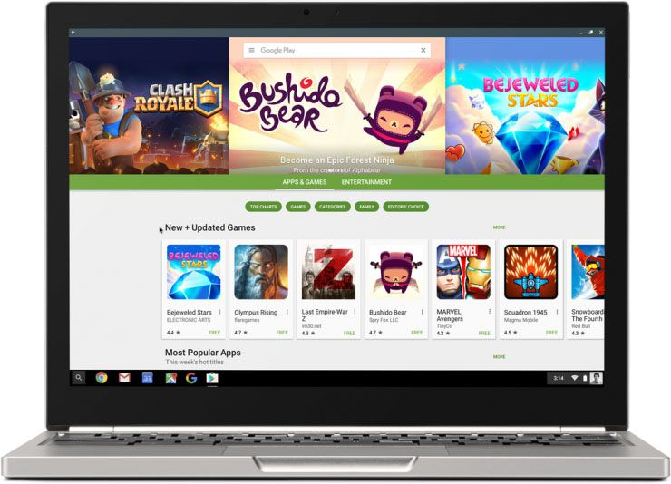
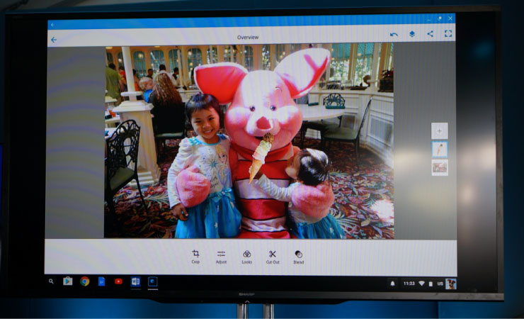

Chrome OS支持所有安卓应用
2019-03-01 12:16:16
14
“Google Play商店马上就要登陆Chrome OS了”谷歌公司在今天的开发者大会上宣布。然后大家就可以在自己的Chromebook跟Chromebox上安装几乎所有安卓应用了。
谷歌让Play商店登陆Chrome OS的计划其实也不是什么秘密。之前大家就可以在Chrome OS上运行部分安卓应用。现在Chrome OS采用了一种全新的技术。“早其的版本用的是”ARC（The Android Runtime for Chrome）“跟”本地客户端（Native Client）”，Kan Liu说到，她是谷歌Chrome OS的主产品经理 。
“但是这样的话，不是还有一个“本地化”的过程要搞吗，这得要应用开发者们多干点活呀“。他说到，”很多开发估计不会这样干呀“。

所以他们团队开始另辟蹊径。现在“Android on Chrome OS”（字面意思“安卓在Chrome系统上”）是在一个Linux容器（LXC）上运行的，所以安卓应用直接在Chrome OS上面运行了。有了这项技术，现在我们也不需要什么模拟了，应用运行的速度也不会打折扣了。现在在支持Chrome OS的电脑上，Chrome OS跟安卓都将用同样的操作系统内核跟硬件资源。应用将在一个保护模式下运行，就算有恶意软件逃出了这个沙箱，Chrome OS的其他所有安全功能还能起作用。
虽然谷歌已经公布了这项新技术，但是它不会马上推送给消费者们。它的首个公测将在今年6月份的Chrome OS dev（开发者版）上，到时候跟N53一起放出来。

一开始，这项功能也只能在一些指定的设备上运行，这些设备基本上都是带触屏的（比如谷歌自己的Chromebook Pixel、华硕的Chromebook Flip还有宏碁的R11）。这样的安排是为了让安卓开发者们有时间去提升对实体键盘的支持（他们不一定要这样做，不过这样用户体验更好）。
对于安卓应用来说，到时候Chromebook就跟其他安卓平板跟手机一样。它们将获得所有Chrome OS系统文件的访问权限，以及Wi-fi跟蓝牙的堆栈。Chrome OS届时将支持所有的标注通知功能、在线回复功能，甚至还有Facebook Messenger式的聊天气泡功能。
Liu还提到，这些应用的离线功能都能保留。比方说，你可以用谷歌相册看离线保存好的图片。Google Play Music、Spotify、Adobe Creative Cloud应用（比如Photoshop Express）、微软的Office应用等等，它们的离线功能正常使用（但是支持Chrome OS的设备一般储存空间很小，如果你想下载你Spofity上的所有音乐，可能有点困难）。
对于企业用户，Android on Chrome OS支持Android at Work（工作安卓），它可以让管理员限制用户能装那些应用不能装那些应用，甚至可以将这项功能完全关掉。
Android on Chrome OS支持ARM跟x86架构的CPU，但是这用处也不大。毕竟移动设备用的几乎都是ARM的，很多安卓应用已经为ARM平台做了优化，但是安卓还是带了一个原生的x86转换层，所以它支持x86的技术难度也不大。另外，几乎所有安卓应用都是用跨平台的Java写的。Liu还提到，安卓上的游戏跟那些对设备图像处理能要求较高的应用基上是用C语言跟C++加上安卓NDK写的，他们基本上支持x86。
现在的Android on Chome OS用的安卓版本是”棉花糖（Marshmallow）”，这不过是因为安卓N还没准备好发布而已。安卓开发团队的副总Dave Burke告诉我们说，他们的团队将一些出现在安卓N上才有的多窗口支持功能放到了Android on Chrome OS上。事实上就想Liu强调的那样，安卓N的多窗口支持功能主要是Chrome OS团队做的。
Liu说，Android on Chrome OS的更新频率大概是6周一次，跟Chrome OS差不多。安卓N系统现在采用A/B升级系统，这让他们的工作更容易（安卓团队又从Chrome OS团队那强了一件活干）。Liu还说，90%以上的Chrome OS都会在几周内更新一次系统。
Chrome OS跟安卓系统能共存在一个设备上了，大家关于谷歌对Chrome OS未来的计划的疑问相信又会成为热点。比如，安卓有了多窗口的支持的功能后长得越来越像桌面系统了，为什么要折腾这样一个既支持Chrome OS这样的桌面式系统又支持安卓系统的东西呢？
Liu回应道，Chrome OS会继续更新下去， 虽然“我们的确放了放Chrome OS“他说道”我们现在想要做的是让Chrome OS保留所有他原有的有点的同时将安卓的优势引进来。“
Burke在另外一个采访中表示，让Chrome OS跟安卓合体，他说”是一个非常实际的共享资源的方法。”他强调，谷歌想保留Chrome OS的特性。
Liu和Burke强调谷歌的Chromebooks是成功的，谷歌公司不想毁掉任何一件好产品。